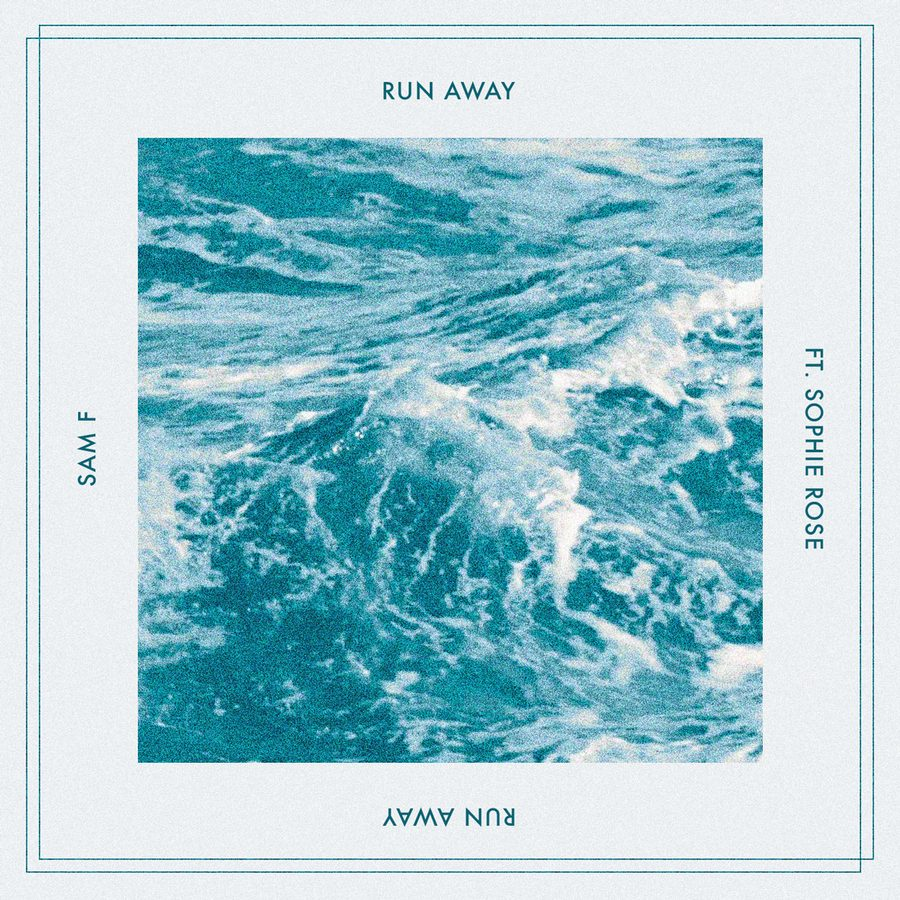

Sam F and Sophie Rose Unveil Their Next Massive Anthem “Run Away”


Sam F had his first early breakthrough several years ago in a fairly unlikely place, in which he produced the bombastic music for Saturday Night Live’s hilarious EDM parody “When Will the Bass Drop.” It encouraged Sam to move to Los Angeles and devote his energies to a career in dance music—and last year, it paid off in the form of “Limitless.”
Proving a massive hit in the Billboard Dance Charts, as well as being picked up and featured in a major ad campaign for the Samsung Galaxy S8, it was a bona fide smash and marked Sam’s arrival in a big, big way. Now, he’s back to kick off 2018 with a similarly huge anthem named “Run Away,” which sees him again working with Sophie Rose on vocals.
To celebrate the release of “Run Away,” we checked in with Sam F to find out more about his musical backstory.
Sam F’s “Run Away” is available here.
How is your year starting out?
2018 has been really awesome so far! I’ve got a ton of new music in the works, and I’ve collected lots of new crystals to fuel my inspiration (amethyst, rose quartz, citrine, and selenite). I also launched a rap side project for fun under the name Dr Woke, and that’ been doing well so far, having dropped songs with Hoodie Allen and Bella Thorne in the past month.
Last year was monumental for you. Tell us a little about your musical history and your journey to where you are now.
2017 was definitely a year of major growth for me, especially getting a publishing deal and charting on Billboard. I started out playing piano as a kid, began making beats in high school for fun, and got more serious about it when I was in college. My first “big break” was producing the Saturday Night Live skit song “When Will the Bass Drop.” After that, I decided to go all in and moved down to L.A. to fully pursue my career in music.
“Limitless” was obviously a huge hit for you last year. What was it like to score such an obviously huge record like that? Did it change things for you significantly?
What’s funny is, I had doubts “Limitless” was gonna be the hit from my last EP. I was blown away by the positive response, radio play, and major support it ended up getting. Just goes to show that you never really know which song is going to be a hit. “Limitless” has definitely opened up new doors for me, and I’m super grateful for how everything has panned out.
You’ve got a solid discography behind you on some serious labels like Dim Mak, Spinnin’ and Fools Gold. How would you describe your approach to dance music?
I don’t have any specific approach to dance music. But when writing a song (I cowrite most of the lyrics, melodies, and toplines to my songs), I like to start with simple chords, no drums, and then produce the song around the vocal after we have the demo recorded.
Your new release on Insomniac Records, “Run Away,” sees you teaming with Sophie Rose again. Tell us a bit of the story behind that track.
Sophie and I cowrote the song in a day over a beat I had originally produced for something else, and I reproduced around it. I love writing with Sophie; she is so incredible.
What’s up next for Sam F?
More music, more shows, and more good vibes.
Follow Sam F on Facebook | Twitter | SoundCloud
Follow Insomniac Records on Facebook | Twitter | SoundCloud